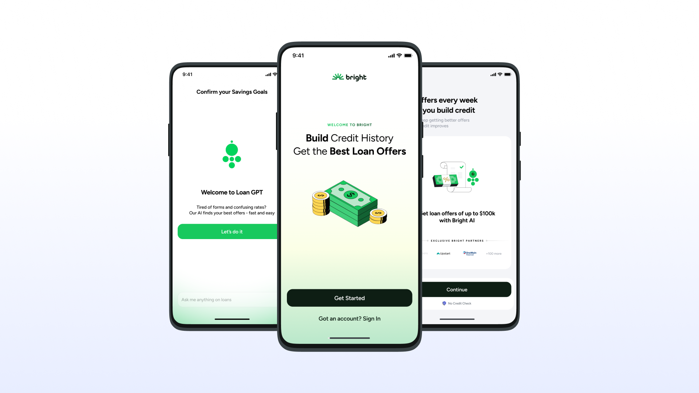
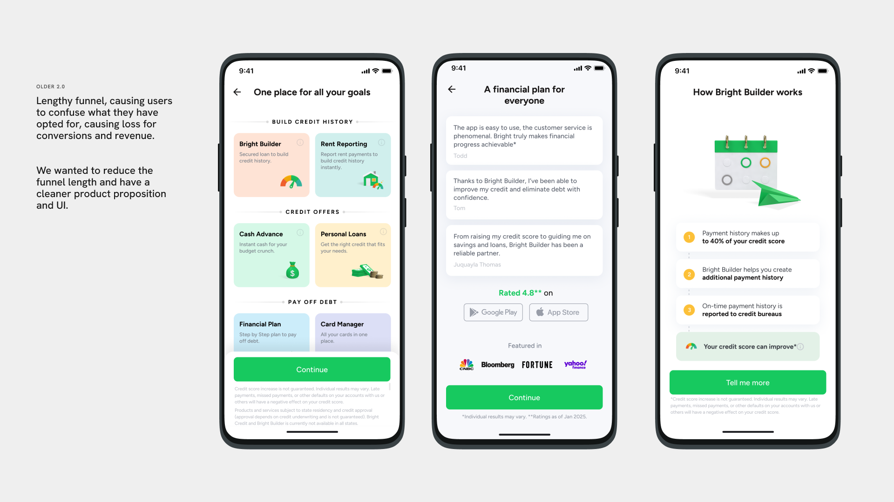
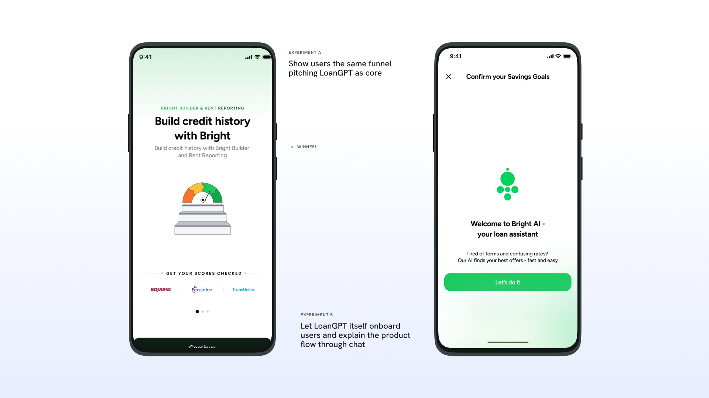
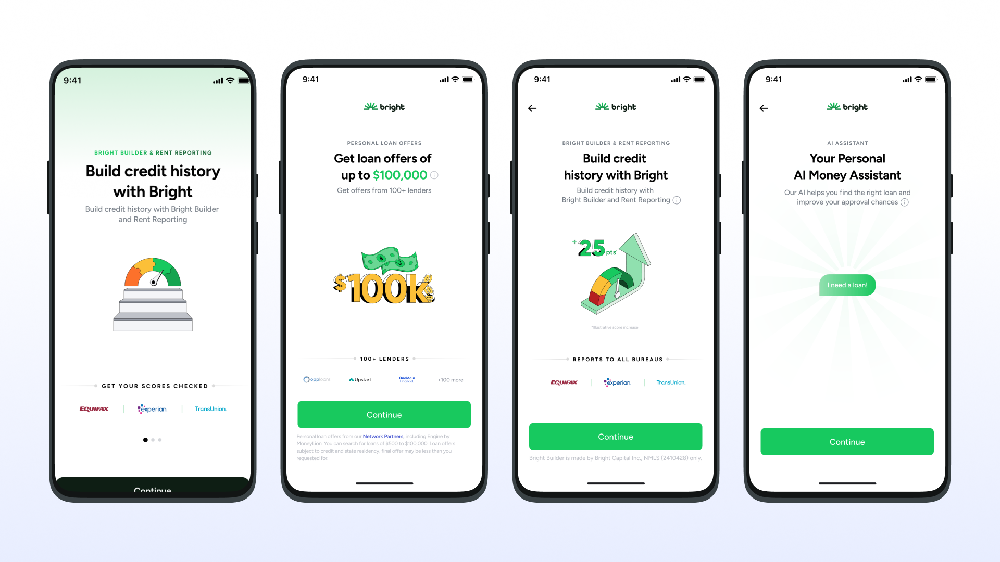
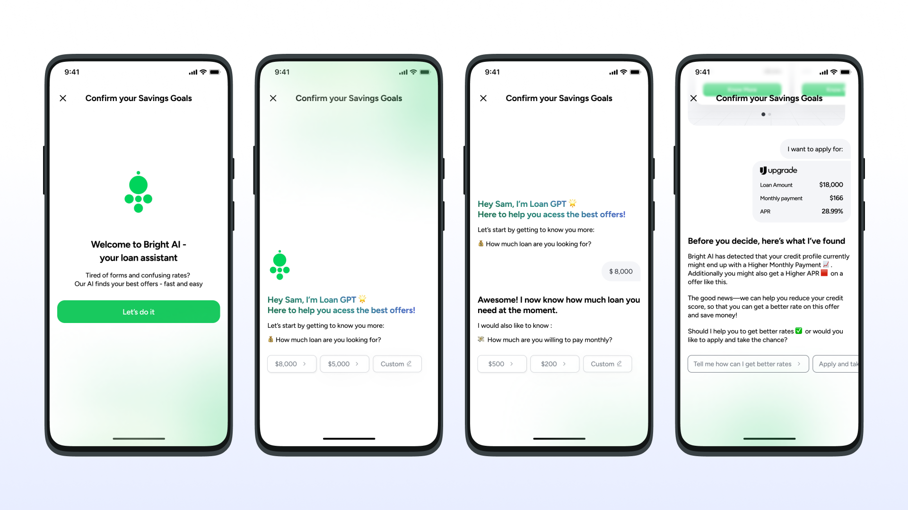
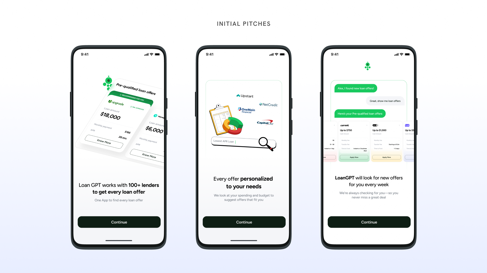
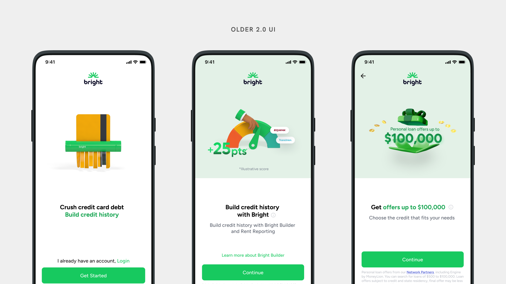
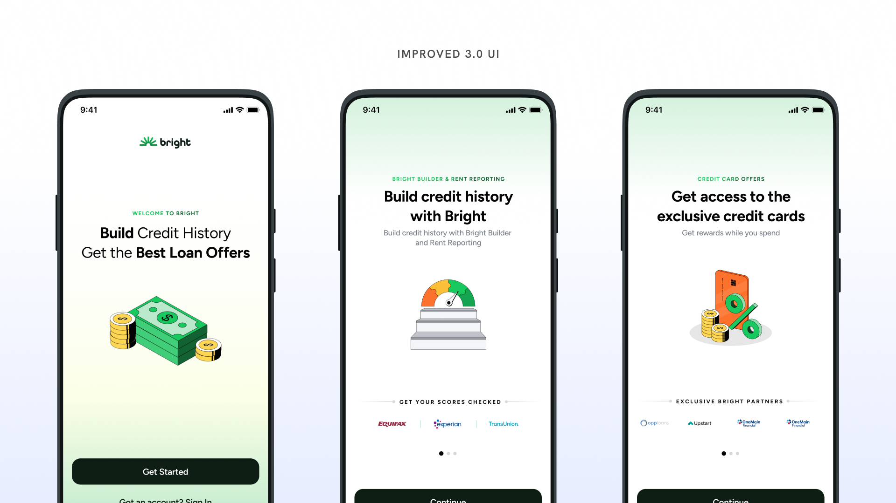
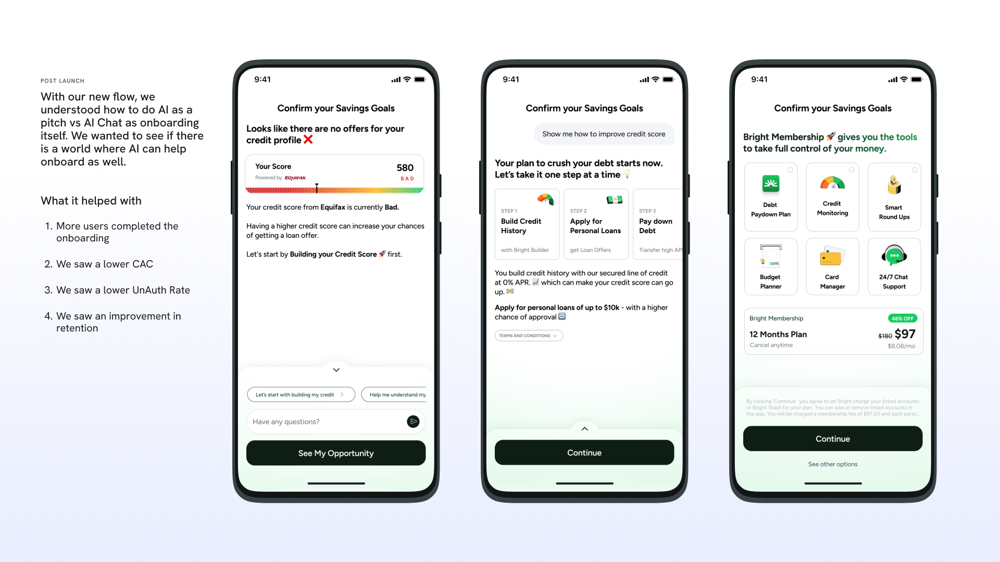

Bright Money is a US credit app for people with bad credit and expensive debt. It builds credit through Bright Builder, rent reporting and bill reporting, and routes users to loan offers through LoanGPT — our lender recommendation product.
The onboarding funnel is how every single user arrives. Nobody uses Bright without passing through it first. It had not been rebuilt since 2022.
I supported Adithya and Charu across the revamp. My slice: narrative curation — deciding what each screen was allowed to say and why — the post-enroll screens and copy through to production, the LoanGPT surfaces inside the funnel, and reconciling the funnel against the design Source of Truth.
Four years of product had been bolted onto a structure built before Rent, Sub Management and Affiliates existed. The funnel still argued like a 2022 product.

We tore down Albert, Cleo, MoneyLion, Acorns, Brigit, Self, Kikoff, Dave and Rocket Money. Not a survey — we were looking for permission to remove things.
Some personalise. None split the product into parallel paths.
The friction we carried pre-Monet was not an industry requirement.
We were selling outcomes and skipping the mechanism.
Bright cannot offer it. Our tangible product had to be the loan proposition itself.
AI was available to us as a differentiator, not a category norm.
Users still said they trusted household bank names more.
Phase 1 was explicit: revamp the experience without damaging any key business metric. Change everything, as long as nothing gets worse.
Pre-sell. PII. Product funnel. Monetisation. Post-enroll add-ons.
The split let us ask a narrower question of every section: what is this part allowed to say, and what is it not allowed to repeat. Most of the work was that question, answered screen by screen.
Three structural bets came out of it.

The third bet was subtraction. Credit agreement, AutoPay and account opening consents all moved past enrolment, attached to the moment a user actually activates Bright Builder or Smart Round-Ups. The data supported it plainly: those consents were not required for monetisation, did not affect secondary opt-ins, and did not affect affiliate revenue.
Add-ons were ordered by ARPU. Rent, then Sub Management, then Affiliates. Affiliates went last for a specific reason — users leave the Bright app during an affiliate journey, so anything placed after it does not get seen.
On 1 December 2025 the PM rewrote the post-enroll narrative in one line: remove Credit Builder from the pitch and make a bigger deal of LoanGPT as the tool that gets you the best loans.
That changed what the funnel was selling. The promise became three things in order: build your score, get the best loan offers with LoanGPT, save money.
"The visuals are actually really important; they are meant to communicate a message, so getting them right really matters."Akhil Jasrotia, PM — on the first round of narrative screens
The message we landed on for the loan proposition: Bright combines loan offers from 100+ lenders and recommends the best one for you. The number tested well. The recommendation framing positioned Bright as adding intelligence rather than acting as a directory.


While the main funnel was being rebuilt, a shorter variant ran in parallel. A $14 plan against the existing $39-and-above flow, on separate landing pages, aimed at acquiring lower AOV users at a lower CPA.
Internally it became the name for the whole new funnel. Every acquisition campaign now carries the prefix.



The CPA saving came with no negative downstream impact. The Phase 1 constraint held. Nothing we removed cost us anything.
One caveat worth stating plainly. These two sets of numbers share a cause. The funnel rebuild is what put LoanGPT in front of users, so some portion of the engagement lift is funnel exposure rather than the LoanGPT surfaces themselves. No control was run that holds exposure constant. They are one result reported two ways, not two independent wins.

Built at Bright Money with Adithya Surasgar, Charuhasan A S, Akhil Jasrotia, Harsha Pappala and Joe. Happy to talk through the parts that are not public. Reach me on LinkedIn.